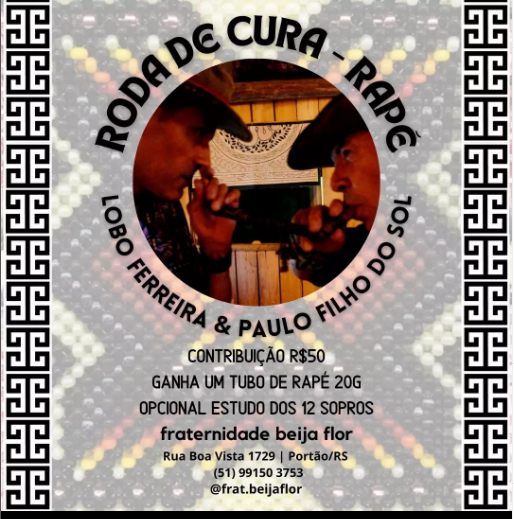

Roda de cura - Rapé
Lobo Ferreira & Paulo Filho do Sol
Está chegando nossa próxima Roda de Cura, 14/07 as 20h.
Sentiu esse chamado só conversar com o @loboferreiras e @paulofilhodosol
Fraternidade Beija Flor convida:
RODA DE CURA - RAPÉ
Data: 14/07- Quinta
Das 20hrs às 23hrs
Local: Fraternidade Beija Flor - Portão - RS
Sentiu esse chamado só conversar com o @loboferreiras e @paulofilhodosol
Fraternidade Beija Flor convida:
RODA DE CURA - RAPÉ
Data: 14/07- Quinta
Das 20hrs às 23hrs
Local: Fraternidade Beija Flor - Portão - RS